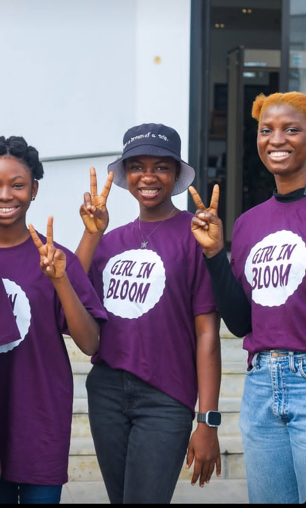

Education
I believe access to quality education can change the direction of a young person's life.
ABOUT ME
I’m Motunrayo Linda Idowu, a Nigerian youth leader, emerging technologist, speaker and girls' empowerment advocate from Lagos, Nigeria.
My work and interests sit at the intersection of technology, data, education, leadership and social impact. I’m interested in using what I learn and build to solve real-world problems and create opportunities for young people, especially girls.

WHO I AM
I am interested in what happens when education, technology, leadership and opportunity meet.
My journey has taken me from classrooms and STEM programmes to leadership spaces, community projects, school outreaches, public speaking and building a girls' community of my own.
I am still figuring things out. I am still learning. But I have become increasingly intentional about using what I learn to make things better for someone else.
I believe access to quality education can change the direction of a young person's life.
I know what it feels like for an opportunity to change what you believe is possible.
I am fascinated by technology as both a skill and a tool for solving real-world problems.
I want girls to have spaces where they can ask questions, find community, learn and become more confident in themselves.
A LITTLE MORE PERSONALLY
I am naturally curious and tend to ask questions when I want to understand how something works.
I can also be very hard on myself. When things do not go the way I imagined, I sometimes take them deeply. But I have learned that failure does not have to be the end of a story.
Sometimes it is simply the part where you learn how to try again.

“Action, not titles.”
I want my work to speak through what I build, the people I support, the conversations I start and the opportunities I help create.